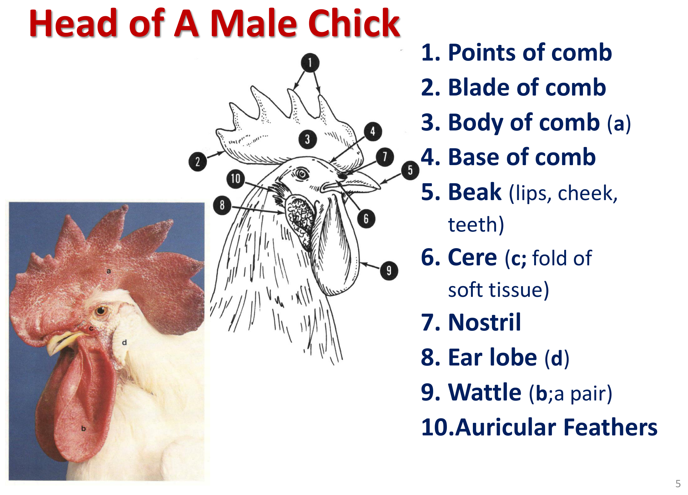
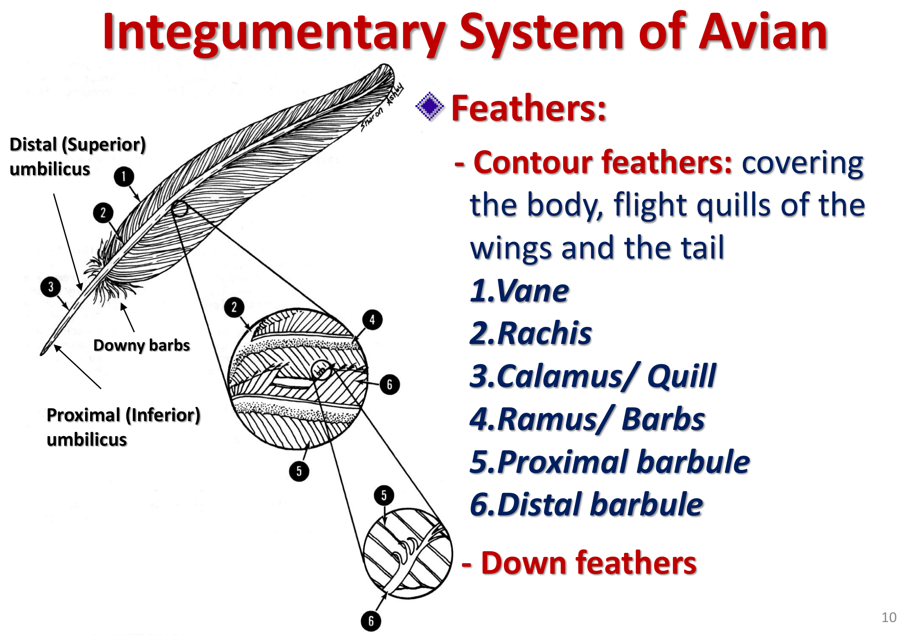
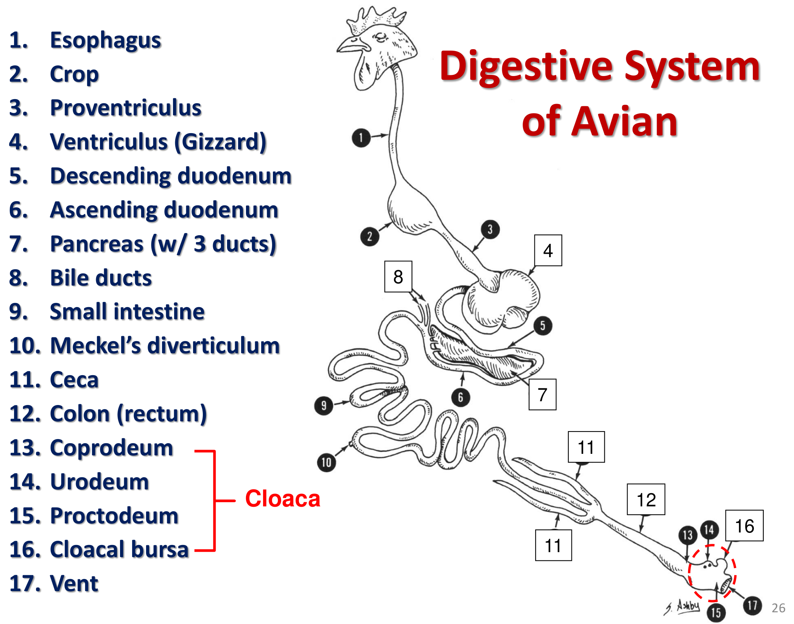
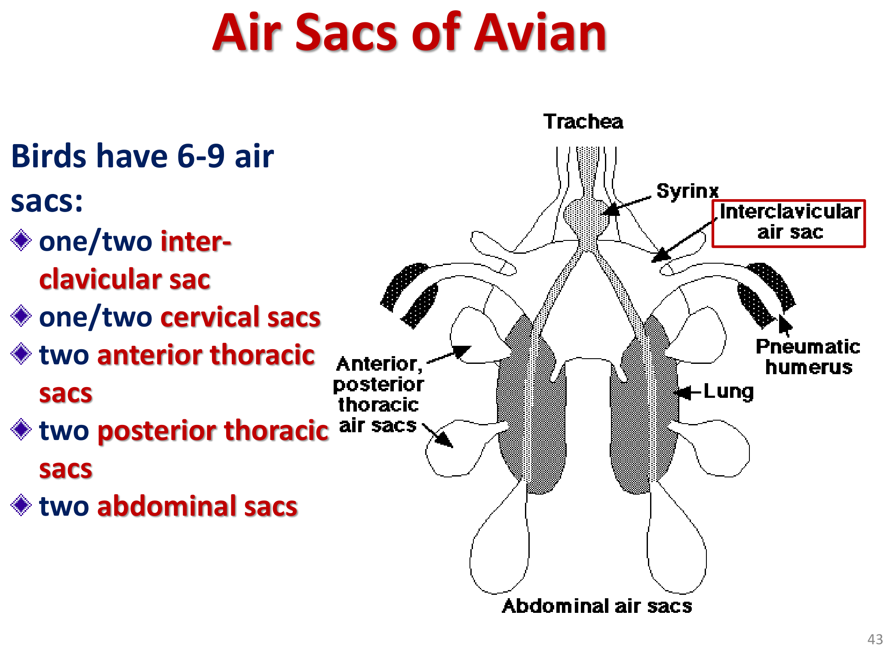
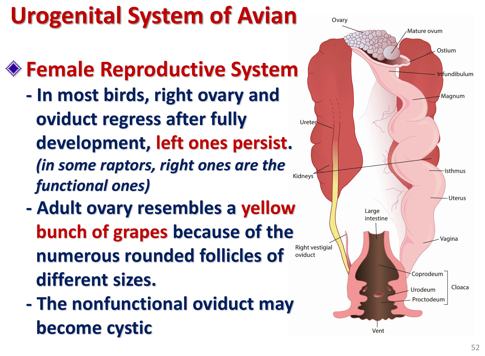

重點摘要
- 禽類解剖幾乎全部圍繞著「為飛行而輕量化、高效率化」這條主軸展開：含氣骨骼（企鵝、潛鳥、海鸚例外）、無膀胱、生殖器官季節性縮小、呼吸空氣需通過肺兩次以提升氣體交換效率、高心臟／體重比——複習每個系統前，先回想這條主軸能幫助理解「為什麼禽類會演化出這個特化構造」。
- 蠟膜（cere）僅見於貓頭鷹、鸚鵡、鴿三類，並非所有鳥種通用；虎皮鸚鵡可用蠟膜顏色判斷性別（公藍母粉/棕），但異常肥厚（hypertrophic cere）常與疥癬蟲（Knemidocoptes）感染有關，是常考的皮膚病臨床連結。
- 消化道以「無牙齒、分工消化」為核心：嗉囊軟化食物（依食性型態不同，鴿子還會分泌嗉囊乳）→腺胃化學消化→肌胃（koilin內襯保護）機械研磨→泄殖腔整合消化、泌尿、生殖三系統於一個出口，是理解禽類消化道與哺乳類最大差異的骨架。
- 氣囊系統（6–9個）本身不進行氣體交換，只有肺臟負責：單向氣流使一份空氣需經過兩個完整呼吸週期才能完全通過肺臟排出；禽類沒有橫膈，靠肋骨與胸骨運動改變體腔壓力驅動呼吸——這組「氣囊＝幫浦、肺＝交換」的分工是呼吸系統最容易混淆也最常考的概念。
- 泌尿生殖系統的兩大特化是「無膀胱」與「多數僅左側生殖道發育」：母鳥輸卵管五段（漏斗部→蛋白分泌部→峽部→子宮部→陰道）各有明確功能與停留時程，子宮部耗時最久（約20又3/4小時）負責形成蛋殼；精子儲存小管（SST）位於子宮陰道交界，是禽類延長受精窗口的關鍵構造。
- 臨床採血與注射部位因物種特化而與哺乳類截然不同：翼（臂）靜脈血管壁薄易形成血腫、小型鳥常用左頸外靜脈、中大型鳥用內側蹠靜脈；小型寵物鳥IM注射常選胸肌、大型鳥可選大腿肌肉——這些是禽科臨床操作的實務基礎。
- 法氏囊（bursa of Fabricius）是禽類特有的淋巴器官，哺乳類沒有對應構造：與胸腺分別是B細胞與T細胞的來源，兩者皆「性成熟前發育良好、性成熟後逐漸退化」；雞與火雞缺乏淋巴結，是鑑別不同禽種免疫構造的重要差異點。
禽類解剖總論 Avian Anatomy Overview
本節資料來源為112學年度解剖學實習上課程講義《Avian Anatomy》（授課教師：廖泰慶）。禽類的解剖構造圍繞著「飛行」演化出大量特化，與已經在骨骼系統／肌肉系統等頁面整理過的哺乳類解剖有系統性的差異。本頁不重複哺乳類骨骼/肌肉細節，而是聚焦在禽類特有的特化構造，並依身體系統分節整理。本頁僅涵蓋112學年度 PDF 版講義內容；同資料夾另有113學年度 PowerPoint 版（Avian Anatomy 113.ppt），因檔案格式限制未納入本頁整理範圍。
哺乳類與禽類的主要解剖／生理差異
| 系統／構造 | 禽類特化重點 |
|---|---|
| 羽毛 Feathers | 禽類特有的皮膚衍生物，取代哺乳類的毛髮，兼具保溫、防水、飛行、展示等功能 |
| 骨骼 Skeleton | 輕量化：多數骨骼中空且含氣（pneumatized），內部具交錯支柱（criss-crossing struts/trusses）增加結構強度；企鵝、潛鳥（loon）、海鸚（puffin）則完全沒有含氣骨（因需要潛水，反而需要較重的骨骼） |
| 消化系統 Digestive | 高效率的消化系統，具嗉囊、腺胃／肌胃分工，以因應無牙齒、需快速消化以維持飛行代謝需求 |
| 泌尿系統 Urinary | 沒有膀胱（no urinary bladder）——減輕體重的另一項特化 |
| 生殖系統 Reproductive | 生殖器官有季節性縮小（seasonal reduction in size），非繁殖季時大幅萎縮以減輕體重 |
| 呼吸系統 Respiratory | 肺部搭配氣囊系統，空氣需通過肺部兩次（air pass through lung twice）才完成一個完整呼吸循環，形成單向氣流 |
| 心臟 Heart | 心臟重量／體重比高，以支持飛行、奔跑、游泳或潛水的高代謝需求 |
這七項差異是整份講義的主軸，後面各節（外皮、肌肉、消化、呼吸、泌尿生殖、循環、免疫、感覺、內分泌）幾乎都是圍繞著「如何讓身體更輕、代謝效率更高，以支撐飛行」這個核心邏輯展開，複習時可以隨時回頭對照這張總表。
本頁涵蓋範圍
本頁依講義出現順序整理：外皮系統（羽毛、喙、蠟膜、腿足、皮膚、尾脂腺）→ 肌肉系統（飛行肌）→ 消化系統（嗉囊、腺胃、肌胃、腸道、泄殖腔）→ 呼吸系統（氣囊系統與單向氣流）→ 泌尿生殖系統（腎臟、公母生殖道、輸卵管分段、精子儲存小管）→ 循環系統（心臟、動靜脈系統、臨床採血部位）→ 免疫系統（胸腺、法氏囊、脾臟）→ 神經與感覺系統（眼睛特化）→ 內分泌系統。
外皮系統 Integumentary System
禽類外皮系統的核心特化就是羽毛（feathers），此外喙（beak）、蠟膜（cere）、腿足鱗片、以及全身唯一的皮膚腺體——尾脂腺（uropygial gland），也都是這一節的重點。
體表區域命名（以鴨、鴿為例）
Cranium 頭頂、Face 臉、Neck 頸、Back 背、Rump 臀部、Tail 尾、Side 側面、Breast 胸、Belly 腹、Undertail (Crissum) 尾下
Arm 上臂部、Forearm 前臂部、Hand 手部（對應肱骨、橈尺骨、腕掌指骨區域的體表命名）
頭部構造（以公雛雞為例）

蠟膜 Cere
蠟膜是鼻孔周圍的軟組織區域，僅見於貓頭鷹（owls）、鸚鵡（parrots）與鴿（pigeons）。以虎皮鸚鵡（budgerigar）為例，蠟膜顏色可用於性別判斷：成鳥公鳥為藍色、成鳥母鳥為粉紅色或棕色。
臨床提醒：蠟膜異常肥厚（hypertrophic cere）是虎皮鸚鵡常見的皮膚病灶，常與疥癬蟲（Knemidocoptes mite）感染有關，臨床上見到蠟膜增厚粗糙時應將疥癬蟲感染列入鑑別診斷。
喙 Beak (Rhamphotheca)
喙是由骨骼構造外覆角質層（horny keratin）所構成，此角質覆蓋層稱為rhamphotheca，分為上喙的 rhinotheca 與下喙的 gnathotheca。
| 構造 | 說明 |
|---|---|
| Culmen | Rhinotheca（上喙角質層）的背側正中線 |
| Gonys | Gnathotheca（下喙角質層）的腹側正中線 |
| Tomia | 上下喙的切緣 |
| Ramus／Inter-ramular region | 下頜腹側觀的兩個分支與其間區域 |
神經支配：上喙由三叉神經的眼支（ophthalmic）與上頜支（maxillary）支配；下喙由三叉神經的下頜支（mandibular）支配。
喙的形態與食性
雜食性，喙形一般化
粗短有力，用於敲碎種子
強大彎鉤狀喙，敲碎堅果
細長喙，採食花蜜
喙緣具板層狀構造（lamellae），過濾水中食物
勾狀喙，撕裂獵物組織
鴨喙內緣具有梳狀板層狀構造（lamellae）與舌緣鬃毛（bristles），兩者共同構成過濾食物的機制，是水禽濾食性攝食的重要特化構造。
羽毛 Feathers

| 羽毛部位 | 說明 |
|---|---|
| Vane 羽片 | 由羽枝、羽小枝交織成的扁平面 |
| Rachis 羽軸 | 羽片中央的主幹 |
| Calamus／Quill 羽根 | 插入皮膚毛囊內的中空管狀基部 |
| Ramus／Barbs 羽枝 | 由羽軸兩側分出的分支 |
| Proximal／Distal barbule 近／遠端羽小枝 | 羽枝上更細的分支，彼此以鉤狀構造相互勾連，使羽片維持平整 |
羽毛種類
覆蓋體表與飛羽、尾羽
細小絨毛，主要功能為保溫
介於正羽與絨羽之間的中間型態
通常比半絨羽更小，長度約為覆蓋其上正羽的1/2至3/4
此外還有鬃毛羽（bristle feathers）（常見於覆蓋耳孔處的耳羽）、尾脂腺羽（oil/uropygial gland feathers）與粉羽（powder feathers）。羽毛橫切面由外而內為表皮（epidermis）、角化層（cornified layer）、真皮（dermis），中央為含軸動脈（axial artery）的羽髓（feather pulp），基部為真皮乳突／生發基質（dermal papilla / germinal matrix），是羽毛持續生長的來源。
飛羽與尾羽 Flight & Tail Feathers
翅膀的飛羽由外而內分為：初級飛羽（primaries）、次級飛羽（secondaries），最靠近身體的飛羽有時稱為三級飛羽（tertiaries）；翅膀前緣另有小翼羽（alular feathers）與覆羽（coverts）。尾羽稱為retrices，作用如同飛行時的煞車與方向舵，控制飛行方向；多數鳥類具12根尾羽。
羽毛更換（換羽）與臨床操作
多數鳥種為季節性換羽；可能一次大量脫落或系統性逐步更換；新生羽毛需數週才能長成，生長期間具血管與神經供應；成熟羽毛則變為無血管、無神經（avascular and aneural）。
翼鎖（wing lock）可用於固定不動；暫時剪羽（temporary pinioning）則是剪去部分翅膀飛羽，但效果只維持到下一次換羽（永久斷翼 permanent pinioning 則需手術處理）。
腿與足部
第一至第四趾（First–Fourth digit）；距（spur）——用於打鬥的骨性突起（公雞明顯）；鱗片（scales）；爪（nails/claws）。
第一趾（First digit）；趾間蹼（interdigital webbing）——水禽划水特化構造；小片組織皺褶（small flange of tissue）。
皮膚 Skin
禽類皮膚由薄的表皮（僅約10層細胞厚）與較厚的真皮組成。皮膚顏色由白色到黃粉色不等，相對缺乏血管（avascular），因此切開時不會像哺乳類一樣大量出血；皮膚與底下肌肉之間連接鬆散。
臨床提醒：皮下注射（SC injection）的建議部位為頸部背側基部（dorsal side of base of neck）、胸部區域（breast region）與腹股溝（groin）。
禽類皮膚缺乏真正的（分泌型）腺體，僅外耳具備分泌蠟狀物質的腺體；表皮細胞可分泌脂質性皮脂物質（lipoid sebaceous material）。
尾脂腺 Uropygial Gland（唯一的皮膚腺體）
尾脂腺（uropygial gland，俗稱 preen gland／oil gland）是禽類皮膚上唯一的腺體，為雙葉構造，位於尾椎背側、靠近尾端。分泌皮脂（sebum），鳥隻理毛時將其塗抹於羽毛上，形成防水油脂層，並具有抑制微生物生長的作用。
此腺體在平胸類（ratites）、多數鴿、啄木鳥，以及部分鸚鵡（如 Amazona、Anodorhynchus、Cyanospitta 屬）中缺如——臨床檢查發現尾脂腺缺如時，需先確認是否屬於本來就沒有此腺體的物種，避免誤判為病理性萎縮。
尾脂腺導管開口於尾端背側的乳頭狀突起（median nipple-like papilla）。
肌肉系統：飛行肌 Muscular System
禽類肌肉系統整體與哺乳類相似，講義特別強調的差異集中在飛行肌的構造與功能分工。
兩大飛行肌
附著於胸骨（sternum）與肱骨（humerus），提供翅膀的「下擊」（down stroke）動作，是主要的飛行動力來源，體積通常較大。
同樣附著於胸骨與肱骨，但提供翅膀的「上擊」（up stroke）動作，位置較深層。
兩條肌肉皆起於胸骨龍骨突區域，止於肱骨，透過相反方向的收縮完成完整的振翅循環。
肌腱礦化與外科限飛
- 礦化肌腱（mineralized tendons）：見於許多鳥種的腿部肌肉，以及部分鳥種的翼部肌肉。
- 外科斷翼術（surgical pinioning）：限制鳥類飛行能力的手術方式，包括肌腱切開術（tenotomy）、肌腱切除術（tenectomy）、神經切除術（neuroctomy）與腕關節固定術（carpal arthrodesis）；或於腕骨／掌骨區域截肢——原理是使翅膀兩側失衡而無法飛行。
臨床肌肉注射部位
小型寵物鳥：胸肌（pectoral muscles）是常用的肌肉注射（IM injection）部位。大型鳥類：大腿肌肉（thigh muscles）也已足夠大而可作為注射部位。
消化系統 Digestive System
禽類消化道最大的特化在於沒有牙齒，改以嗉囊儲存軟化食物、腺胃分泌消化液、肌胃研磨食物的分工模式來完成消化，末端則以複合構造的泄殖腔（cloaca）整合消化、泌尿、生殖三系統的出口。

嗉囊 Crop——因食性而異
梭狀，構造較簡單
可軟化種子，以推進砂囊（gizzard）研磨
發達的雙葉嗉囊，可軟化食物，並分泌「嗉囊乳」（crop milk）哺育雛鳥
嗉囊位於胸腔入口（thoracic inlet）附近，鄰近胸腺葉（thymus lobes）；食道與嗉囊內壁具縱向皺褶，可隨食物量擴張。
腺胃與肌胃 Proventriculus & Ventriculus (Gizzard)
| 部位 | 功能 |
|---|---|
| 腺胃 Proventriculus | 分泌胃酸與消化酵素（化學性消化） |
| 峽部 Isthmus | 連接腺胃與肌胃的過渡帶 |
| 肌胃（砂囊）Ventriculus / Gizzard | 厚實肌肉組成，內含顱側盲囊（cranial blind sac）與尾側盲囊（caudal blind sac），藉強力肌肉收縮研磨食物（機械性消化），許多鳥種會吞食砂礫協助研磨 |
| Koilin | 由碳水化合物-蛋白質複合物構成的內襯，保護肌胃內壁不受腺胃分泌之胃酸與酵素侵蝕 |
十二指腸、胰臟與肝臟
- 十二指腸襻（duodenal loop）：由降十二指腸與升十二指腸構成，中間夾著胰臟（pancreas）。
- 胰臟具3條胰管，開口於升十二指腸附近。
- 肝臟分右葉與左葉（左葉又分外側部與內側部），具膽囊（gall bladder）；膽管與胰管共同開口於升十二指腸附近。
小腸、盲腸與泄殖腔
- 空腸與迴腸（jejunum, ileum）：構造與哺乳類相近，迴腸末端有梅克爾憩室（Meckel's diverticulum）作為卵黃囊殘跡的地標。
- 盲腸（ceca）：成對，分頸部（neck）、體部（body）、頂端（apex）三段；在金絲雀與鴿子屬於退化的盲腸（vestigial caeca），通常含有大量淋巴組織。
- 泄殖腔（cloaca）三部分：糞道（coprodeum）承接直腸、尿道（urodeum）承接輸尿管（ureteric orifice）與生殖道（母鳥左側具輸卵管囊 oviduct bursa）、肛道（proctodeum）通向肛門（vent），另有背側肛道腺（dorsal proctodeal gland）、糞尿摺（coprourodeal fold）、尿肛摺（uroproctodeal fold）與肛門括約肌（vent sphincter）；法氏囊（cloacal bursa／Bursa of Fabricius）則開口於泄殖腔背側（詳見免疫系統一節）。
呼吸系統：氣囊系統 Respiratory System & Air Sacs
禽類呼吸系統最重要的特化是氣囊系統（air sac system）與單向氣流（unidirectional airflow），這也是禽類能維持高代謝率以支撐飛行的關鍵構造之一。
氣囊的組成（共6–9個）
間鎖骨氣囊（interclavicular sac，1–2個）、頸氣囊（cervical sacs，1–2個）、前胸氣囊（anterior thoracic sacs，2個）
後胸氣囊（posterior thoracic sacs，2個）、腹氣囊（abdominal sacs，2個）

單向氣流
吸氣時，空氣同時進入後氣囊（主要）與肺臟；呼氣時，後氣囊內的空氣被推送通過肺臟進入前氣囊，再由前氣囊呼出體外。因此一份空氣需要經過兩個完整呼吸週期（一次吸氣＋一次呼氣，再一次吸氣＋一次呼氣）才能完全通過肺臟並排出——這正是總論所述「air pass through lung twice」的機制基礎，也使氣體交換效率遠高於哺乳類的潮式（tidal）呼吸。
O₂–CO₂ 氣體交換僅發生在肺臟，氣囊本身不具氣體交換功能，主要作為氣流幫浦與輔助輕量化（部分氣囊延伸進入含氣骨骼，如肱骨）。
呼吸動力：沒有橫膈
禽類沒有橫膈（diaphragm），呼吸動作是透過肋骨與胸骨的運動改變體腔內（腹腔—胸腔）壓力，進而驅動吸氣與呼氣，取代了哺乳類橫膈收縮/放鬆的呼吸機制。
泌尿生殖系統 Urogenital System
禽類泌尿系統最大特徵是沒有膀胱；生殖系統則因飛行減重需求而具有季節性萎縮與單側發育的特化，母鳥的輸卵管更發展出精密分工的五段構造以完成蛋的形成。
泌尿系統
腎臟對稱地位於髂骨（ilium）腹側的凹陷腔室內，每側腎臟分為3個腎葉（顱側、中間、尾側）。輸尿管分為：沿腎臟走行的腎部（renal part）與由腎臟通往泄殖腔尿道（urodeum）的骨盆部（pelvic part）；全程無膀胱儲存尿液。
公鳥生殖系統
- 睪丸對稱排列，位於體腔內；幼齡公雞睪丸很小，位於腎臟顱側。
- 手術閹割（surgical caponization）：經由最後兩根肋骨間、右側短切口進入腹膜腔，適用於體重0.5–1.2 kg的雛雞。
- 副睪（epididymis）緊貼在睪丸的背內側緣。
- 多數禽類（雞、鸚鵡、雀、鴿、猛禽）的交配器官僅由泄殖腔黏膜皺褶構成，並無真正的陰莖；輸精管（ductus deferens）延伸至泄殖腔的尿道（urodeum）。
- 僅少數鳥種（部分鴨科、鴕鳥）具有陰莖狀構造（penile structure）。
- 肉眼上無法辨識出附屬性腺（secondary sex glands）。
母鳥生殖系統
多數鳥類僅左側卵巢與輸卵管完全發育成熟，右側則於發育完成後退化（部分猛禽例外，右側才是具功能的一側）。成熟卵巢因具有大小不一、圓形的濾泡（follicles）而外觀形似一串黃色葡萄：通常有4–5顆較大的成熟濾泡，以及數千顆較小的未成熟濾泡；未使用的輸卵管可能發生囊腫化（cystic）。

輸卵管五段與蛋的形成時程
| 區段 | 停留時間 | 功能 |
|---|---|---|
| Infundibulum 漏斗部 | 約1/4小時 | 接收來自卵巢的卵黃（yolk）；若有活精子存在，受精即發生於此處 |
| Magnum 蛋白分泌部 | 約3小時 | 分泌並層層包裹蛋白（albumin） |
| Isthmus 峽部 | 約1又1/4小時 | 添加內、外殼膜（inner & outer shell membrane） |
| Uterus 子宮部 | 約20又3/4小時 | 添加蛋殼材質（主要為碳酸鈣 calcium carbonate），也可能添加色素使蛋殼呈棕色 |
| Vagina 陰道 | 小於1分鐘 | 無其他已知功能，僅將蛋送至泄殖腔 |
從漏斗部到陰道，整顆蛋的形成總時程約24–26小時，其中絕大部分時間（約20又3/4小時）都花在子宮部形成蛋殼。
精子儲存小管 Sperm Storage Tubules (SST)
位於子宮—陰道交界（utero-vaginal junction, UVJ），漏斗部（infundibulum）也可見SST。精子進入SST後可長時間存活：雞約7–14天、火雞約40–50天，被認為是禽類完成受精不可或缺的重要機制。
循環系統 Circulatory System
禽類心臟構造與哺乳類相似（四腔心），差異主要在於血管分支的命名與臨床採血／心臟穿刺的部位選擇。
心臟
禽類具有高效率的心血管系統，以應付飛行（及奔跑、游泳、潛水）的高代謝需求。與哺乳類相同為四腔心（2心房＋2心室），含氧血與缺氧血完全分離。
動脈系統重點
| 血管 | 供應區域 |
|---|---|
| 頸總動脈 Carotid | 頭部 |
| 臂動脈 Brachial | 翅膀 |
| 胸動脈 Pectoral | 胸肌（飛行肌） |
| 體循環弓 Systemic arch（升＋降主動脈） | 除肺以外的全身各處 |
| 左右肺動脈 Pulmonary arteries | 肺 |
| 腹腔動脈 Celiac (Coeliac) | 降主動脈的第一大分支，供應上腹部器官組織 |
| 腎動脈 Renal arteries | 腎臟 |
| 股動脈 Femoral／尾動脈 Caudal artery | 後肢／尾部 |
| 後腸繫膜動脈 Posterior mesenteric | 下腹部器官組織 |
靜脈系統重點
- 頸靜脈吻合（jugular anastomosis）：當頭部轉向且一側頸靜脈受壓時，血流可經此吻合由右側流向左側，是頸靜脈相關臨床操作需理解的解剖基礎；頸靜脈引流頭頸部。
- 臂靜脈（brachial veins）引流翅膀；胸靜脈（pectoral veins）引流胸肌與前胸區。
- 前腔靜脈（anterior vena cavae，左右各一）引流身體前段；後腔靜脈（caudal vena cava）引流身體後段。
- 肝靜脈（hepatic vein）引流肝臟；肝門靜脈（hepatic portal vein）引流消化系統；尾腸繫膜靜脈（coccygeomesenteric vein）引流後段消化道，並匯入肝門靜脈。
- 股靜脈／外側髂靜脈（femoral/external iliac veins）引流後肢；坐骨靜脈（sciatic veins）引流髖／大腿區；腎靜脈與腎門靜脈引流腎臟。
臨床心臟穿刺與採血
心臟穿刺（cardiocentesis）：可由顱側入路（cranial approach）進行。靜脈採血（venipuncture）常用部位：
| 部位 | 備註 |
|---|---|
| 臂靜脈（翼靜脈, brachial/"wing" vein） | 血管壁很薄，採血後常形成血腫（hematoma） |
| 左側頸外靜脈（left external jugular vein） | 通常用於小型鳥 |
| 內側蹠靜脈／尾側脛靜脈（medial metatarsal / caudal tibial veins） | 通常用於中至大型鳥 |
| 枕靜脈竇與趾甲（occipital venous sinus and nail） | 多用於研究用途 |
免疫系統 Immune System
禽類免疫系統以胸腺（thymus）與法氏囊（bursa of Fabricius）為主，脾臟與散在淋巴組織則扮演次要角色；法氏囊是禽類特有的淋巴器官，哺乳類沒有對應構造，是與哺乳類免疫系統最大的差異。
胸腺 Thymus
位於頸部，常以多個分葉形式從下頜角一路延伸至胸腔入口。是T淋巴球的來源，在性未成熟的鳥隻體積最大，之後隨性成熟逐漸退化。
法氏囊 Bursa of Fabricius
為泄殖腔肛道區背側的一個中央憩室。負責humoral immunity（體液性免疫）的成熟B淋巴球由此遷移至周邊／次級淋巴組織。與胸腺相同，性成熟後會逐漸退化。
脾臟 Spleen
雞的脾臟呈球形或蛋形；水禽的脾臟則較呈三角形。位於腺胃與肌胃交界處的右側。
淋巴結 Lymph Nodes
雞與火雞缺乏淋巴結，但多數其他鳥種則具有淋巴結——此為鑑別不同禽種免疫系統構造時的重要差異點。
胸腺（T細胞）與法氏囊（B細胞）皆為「先發育良好、性成熟後逐漸退化」的淋巴器官，這個時間軸在判讀組織病理或評估幼禽/成禽免疫狀態時很重要。
神經與感覺系統 Nervous System & Special Senses
講義指出禽類神經系統整體與哺乳類無顯著差異，本節整理的重點集中在視覺特化與少數臨床相關的神經構造。
整體概述
- 神經系統整體構造與哺乳類無顯著差異。
- 耳部缺乏耳廓（pinna）。
眼睛
禽類具有發達的眼睛與極佳的視力；眼球的鞏膜（sclera）內含11–15片小型骨板（scleral ossicles），可提供結構支撐。許多鳥種具有色彩辨識能力（color discrimination）。
| 眼瞼構造 | 說明 |
|---|---|
| 上眼瞼 Upper eyelid | 僅在睡眠時閉合 |
| 下眼瞼 Lower eyelid | 較薄且活動度較高，是主要負責眨眼閉合的眼瞼 |
| 第三眼瞼 Third eyelid（瞬膜） | 眨眼時橫向掃過眼球表面 |
臨床相關神經構造
坐骨神經（sciatic nerve）走行於腿部的尾內側（caudomedial side）；在馬立克氏病（Marek's disease）時，此神經可出現腫大與變色，是重要的病理鑑別線索。
內分泌系統 Endocrine System
禽類內分泌腺體的分布與哺乳類架構相近，講義重點在於各腺體於頸部胸腔入口附近的相對位置。
| 腺體 | 位置 |
|---|---|
| 甲狀腺 Thyroid glands（成對） | 位於胸腔入口，緊鄰頸總動脈（common carotid arteries） |
| 副甲狀腺 Parathyroid glands | 緊接在甲狀腺尾側，每側呈2個小團塊 |
| 頸動脈體 Carotid bodies | 位於兩個副甲狀腺之間，靠近頸動脈體動脈（carotid body artery） |
| 後鰓體 Ultimobranchial bodies | 位於甲狀腺尾側數毫米處，分泌降鈣素（calcitonin） |
| 腎上腺 Suprarenal (adrenal) glands | 緊貼於腎臟的顱側端 |
學習重點整理
從「為飛行而輕量化、高效率化」的角度串起各系統重點，複習前可先快速掃過本節，找出自己不熟的部分再回對應章節細讀。
練習題 Practice Quiz
涵蓋外皮、肌肉、消化、呼吸、泌尿生殖、循環、免疫、感覺、內分泌各章節重點，先自己作答再點「顯示答案」核對，答錯的觀念請回對應章節重讀一次。
蠟膜僅見於貓頭鷹、鸚鵡與鴿，並非所有鳥種都有；即使在有蠟膜的物種中，也並非所有鳥種都能單純以蠟膜顏色判別性別（僅在虎皮鸚鵡等特定物種常用此法）。
換羽多為季節性，新生羽毛生長期間具血管與神經供應，但成熟羽毛則變為無血管、無神經（avascular and aneural）。
鴿子具發達的雙葉嗉囊，除了軟化食物外還能分泌嗉囊乳哺育雛鳥；水禽嗉囊構造簡單呈梭狀，鸚鵡嗉囊主要功能是軟化種子以推進砂囊。
Koilin 是由碳水化合物-蛋白質複合物構成的肌胃內襯，用以保護肌胃內壁不受腺胃分泌的酸與酵素侵蝕。
吸氣時空氣主要進入後氣囊，呼氣時才被推送通過肺臟進入前氣囊，再於下一次呼氣排出，因此需兩個呼吸週期，形成單向氣流。
前氣囊＝頸氣囊＋間鎖骨氣囊＋前胸氣囊；後氣囊＝後胸氣囊＋腹氣囊。
輸尿管分為沿腎臟走行的「腎部（renal part）」與由腎臟通往泄殖腔尿道（urodeum）的「骨盆部（pelvic part）」。禽類泌尿系統與哺乳類最大差異在於沒有膀胱，尿液（尿酸鹽）直接經輸尿管送至泄殖腔排出，是減輕體重以利飛行的特化之一。
多數禽類（雞、鸚鵡、雀、鴿、猛禽）交配器官僅由泄殖腔黏膜皺褶構成，並無真正陰莖；僅部分鴨科與鴕鳥等少數鳥種具有陰莖狀構造。
多數鳥類左側卵巢/輸卵管持續發育，右側於完全發育後退化；但部分猛禽例外，是右側輸卵管具有功能。
在「子宮部（uterus）」添加蛋殼材質（主要為碳酸鈣，也可能添加色素），停留時間約20又3/4小時，是輸卵管五段中耗時最長的一段。
尾脂腺（uropygial gland，preen/oil gland）是禽類皮膚上唯一的腺體，分泌皮脂供理毛防水抗菌使用；但平胸類、多數鴿、啄木鳥及部分鸚鵡屬缺如此腺體。
法氏囊是禽類特有的淋巴器官，哺乳類沒有對應構造；負責的是B淋巴球（體液性免疫）的成熟，T淋巴球的來源是胸腺。
SST主要位於子宮—陰道交界（utero-vaginal junction, UVJ），漏斗部（infundibulum）也可見。雞的精子在SST中約可存活7–14天，火雞則可長達40–50天，這是禽類完成受精的重要機制。